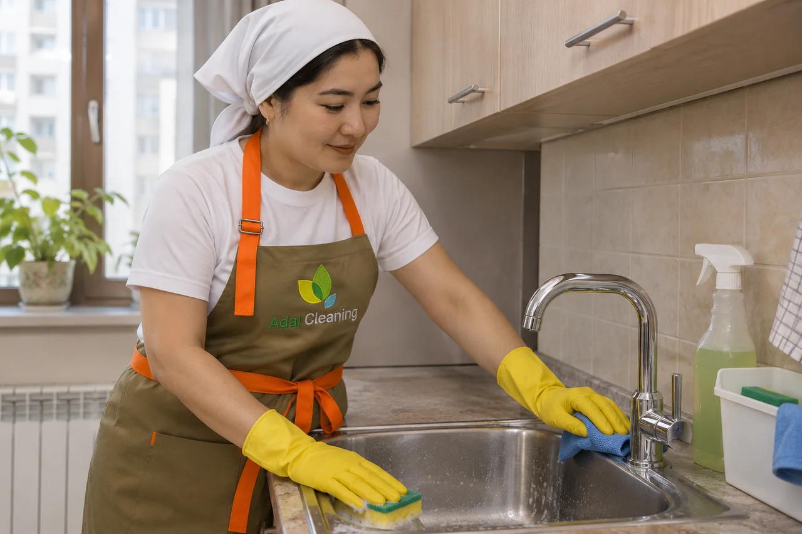
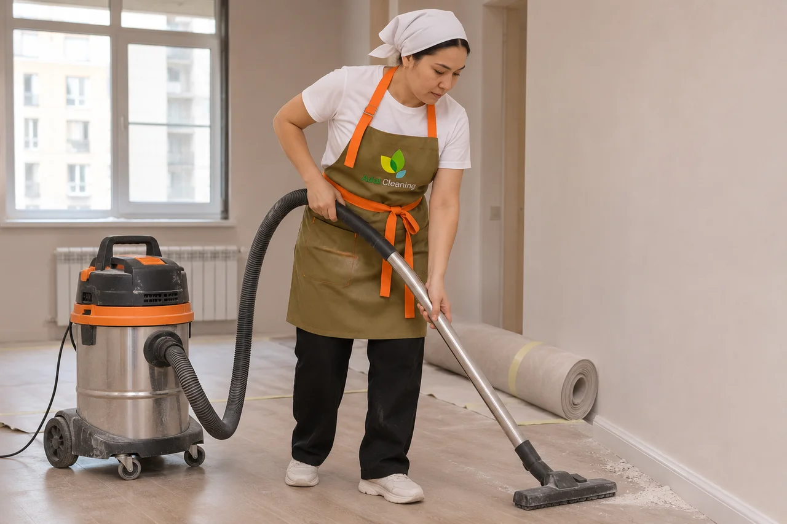

Күрделі тазалау
Асүйді, санитарлық торапты және бөлмелерді мұқият тазалаймыз. Бұрыштар мен қол жетуі қиын жерлерге де көңіл бөлеміз.
700 ₸ / м²
Қызметті таңдау · Күрделі тазалауАстана мен Алматыдағы клининг
Уақыт өте жылдам өтеді. Оны тоқтату да, баяулату да мүмкін емес. Уақытыңызды пайдалы өткізіңіз, ал үй тазалығын бізге тапсырыңыз.
Құрметпен, Adal Cleaning.

Қажет қызметті таңдаңыз — ылғалды тазалаудан бастап, пәтерді жаңа тұрғындарға дайындауға дейін.

Асүйді, санитарлық торапты және бөлмелерді мұқият тазалаймыз. Бұрыштар мен қол жетуі қиын жерлерге де көңіл бөлеміз.
700 ₸ / м²
Қызметті таңдау · Күрделі тазалау
Көшіп кірер алдында құрылыс шаңын кетіріп, беттерді тазалаймыз.
1 000 ₸ / м²
Қызметті таңдау · Жөндеуден кейінгі тазалауПәтерді сергіту үшін еденді жуып, қолжетімді беттерді сүртеміз.
400 ₸ / м²
Қызметті таңдау · Ылғалды тазалау
Тұрғындар көшіп кеткеннен кейін пәтерді көрсетуге немесе жаңа тұрғындарға дайындаймыз.
Жеке есептеледі
Қызметті таңдау · Жалға алушылардан кейінгі тазалау
Жұмсақ жиһазды мата түрі мен ластану деңгейіне сай тазалаймыз.
Зат бойынша, баға тізіміне сай
Қызметті таңдау · Химиялық тазалауБаға тізімі мен сайттағы есеп шамамен берілген. Нақты құн нысанның жағдайы мен қосымша жұмыстарға байланысты.
Толық күрделі тазалауда заттарды жинап, бүктеу бөлек төленеді.
Баға өлшемі мен ластану деңгейіне байланысты.
Химиялық тазалау құнын есептеуҚала сыртына шығу құны қашықтыққа байланысты.
Ашық беттер мен жиһаздың алдыңғы бетін сүртеміз, кілемдерді шаңсорғышпен тазалаймыз, еденді, еден жиегін және сантехниканы жуамыз, тұрмыстық қоқысты шығарамыз.
Қабырға, төбе, радиатор мен люстраның шаңын тазалаймыз, маусымға қарай терезенің сыртын жуамыз, пердені бумен тазалаймыз. Еден мен еден жиегін жуып, жылжымалы жиһаздың артын, асүй жиһазының алдыңғы бетін, сорғыш пен санитарлық торапты тазалаймыз. Шкаф, тоңазытқыш және пештің ішін жуу бөлек төленеді.
Қолжетімді беттердегі құрылыс шаңын кетіріп, терезелерді, жақтауларды және терезе алдындағы тақтайларды жуамыз, үлдір мен жапсырмаларды шешеміз. Радиатор мен сантехниканы тазалап, еденді жуамыз, мүмкін болған жерде цемент пен бояу іздерін кетіреміз.

Пәтердің шамамен ауданы мен не істеу керегінің қысқаша сипаттамасы керек.
Қажет қызметті көрсетіңіз немесе нені тазалау керегін сипаттаңыз.
Ауданын, жағдайын және ерекше көңіл бөлу керек жерлерді нақтылаймыз.
Жұмыс тізімін талқылап, ыңғайлы күнді таңдаймыз.
Ылғалды тазалау еден мен беттерді үнемі сүртіп тұруға қолайлы. Күрделі тазалауда қол жетуі қиын жерлер мен кетпей тұрған дақтарға көбірек уақыт бөлеміз.
Жалға алушылардан кейінгі тазалауды таңдап, келесі тұрғындар келерде нені дайындау керегін айтыңыз.
Қандай жиһазды тазалау керек екенін көрсетіңіз. Оны негізгі тазалаумен бірге келісеміз.
Телефон нөміріңізді қалдырып, қажетті қызмет пен пәтер ауданын көрсетіңіз.
Қызметті таңдап, ауданын немесе заттар санын көрсетіңіз. Дайын болғанда өтінімді тиісті филиалдың WhatsApp нөміріне жіберіңіз.